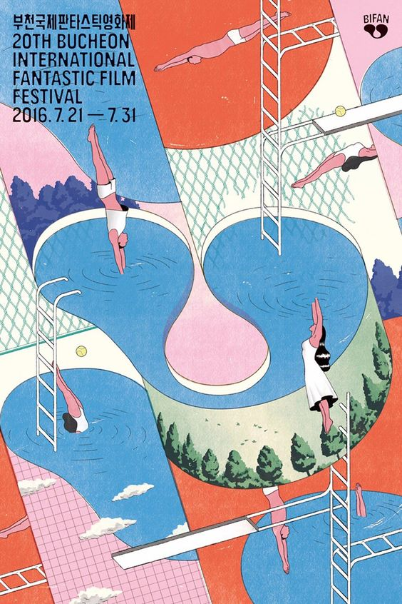
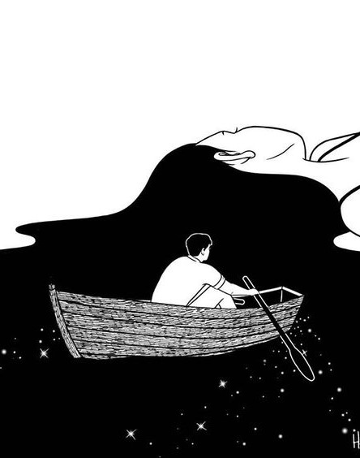
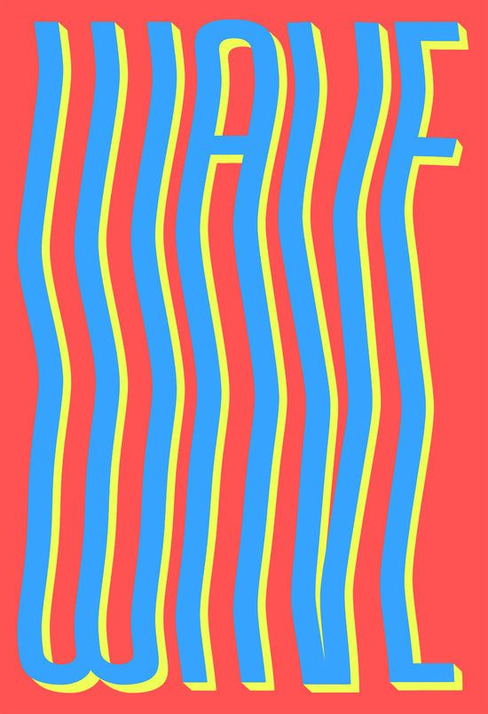
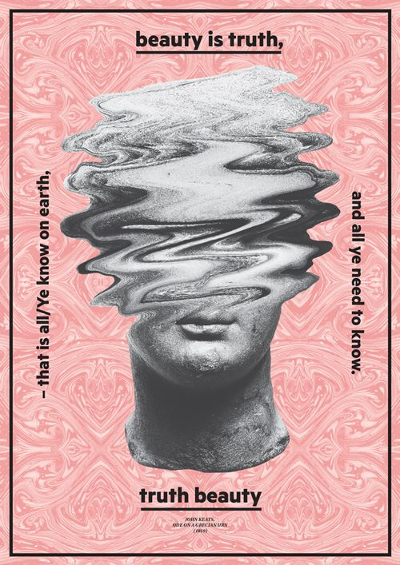

Experience Art
Lahari Pullakhandam
31 July 2017
Experience art in a new way
He was there, floating in the vast depths of his brilliant mind
We had paper skin, ink for blood, and music in our shadows
Piece 3

Piece 4

Piece 5

Piece 6
Piece 7

Piece 8
p